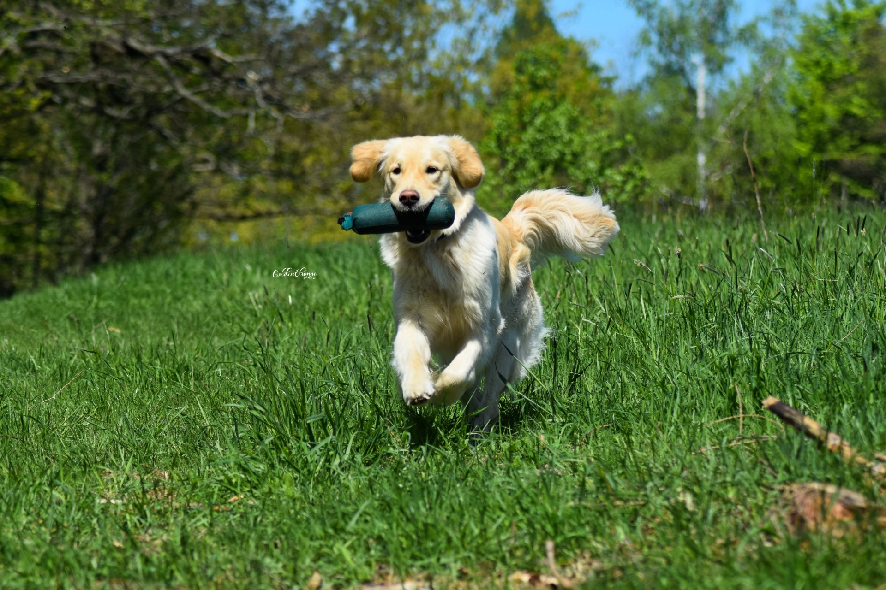

images/alma-profile.jpg).

images/alma-profile-2.jpg).
Alma Bohemica Aurum
Alminka je naše vysněná fenečka zlatého retrívra. Do života k nám vtrhla jako velká voda a velmi rychle se z ní stal pes do každé situace – parťák na výlety, dovolené, sport i klidné večery doma.
Zdraví
- Výška 56 cm, chrup úplný nůžkový
- GR-PRA1 N/N, DR-PRA2 N/N, PRA N/N
- ICT N/P, ICT-2 N/N, NCL N/N, GRMD Xn/Xn
- HD B, ED 0/0
- OCD negativní, SA negativní, LTV 0
Ocenění a zkoušky
- Třída štěňat: VN1, Jubilejní vítěz štěně
- Třída dorostu: VN1, VN2
- Třída mladých: 2× VD, 2× V, V2
- OVVR – 232 b., plný počet
Rodokmen
- Otec: SPA CH Brandon de Ria Vela
- Matka: Lolipop Dorado Blanco
- Majitel: Lucie Klesová
- Chovatel: Ing. František Vacek, Bohemica Aurum